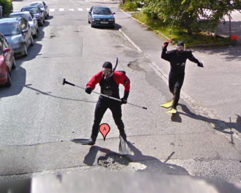

銛を持った男たち、Googleストリートビューの撮影車を追いかける 26
ストーリー by hylom
どう見ても不審者です 部門より
どう見ても不審者です 部門より
あるAnonymous Coward 曰く、
ストリートビューに何とかオモシロく写りたいと（？）企んだノルウェー男性2人が、その試みに成功したようだ（本家記事）。
ストリートビューの撮影が行われることを知ったこの2人組は、写真に納まろうとスピアフィッシングの装備をつけてGoogleの車が来るのを待ち構えていたそうだ。2人は車を見つけると銛をかついで車を追いかけ、無事に写真に納まった模様。ちなみに、Street Viewでそのまま道を進んでいくとだんだん彼らが引き離されていきます(笑)。
彼らの姿はGoogle Mapの「Rugdeveien 39 Bergen」で確認できる。

ダエモンの主張 (スコア:4, おもしろおかしい)
これは Google に FreeBSD を使えと言うアピールなんだ。
TomOne